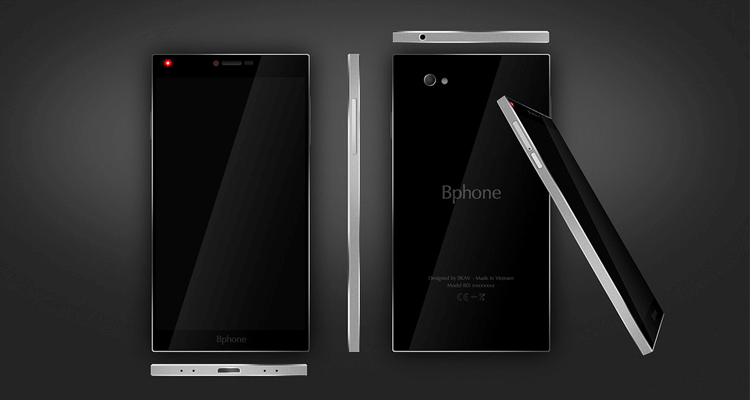

(Photo from VnExpress)
A Cheap Copycat?
Four years along with millions of USD invested in this project, and Vietnam is proud to have finally launched its first ever "developed, built, and marketed in Vietnam" smartphone: the Bphone.
As I read through various online forums today, I couldn't help but witness a swamp of criticism geared toward every single little factor that came into the building and launching of this product. The phone itself, the company that made it, its founder (pictured above), his presentation, the launch event etc. Endless comparisons were being made with almost legendary figures like Steve Jobs, Bill Gates, or Elon Musk, without forgetting to include the legacies they have built in their multi-billion dollar enterprises and some of the most recognizable brands on Earth.
The Case Of "0 to 1"
Perhaps some of the more justified comments were being made around the fact that the Bphone is almost a feature-to-feature copycat of the famous iPhone itself, from the hardware design to the interface layout. On a fair note, I was brought back to a book written by Peter Theil, Zero to One (strongly recommended), which illustrates his perspective and ideal on building a startup for the future. Basically, Peter believes that the only valuable businesses which will emerge successful and victorious in the future are those whose innovative values are defined by its commitment to solving a real world problem - one which he defines as a contrarian question that nobody has ever asked. Only then can the world produce something new from nothing, a transition from 0 to 1, as opposed to the popular practice of replicating a proven model and optimizing its mechanism elsewhere, merely taking the world from 1 to x.
(Picture from Bkav)
Okay...But How Did Vietnam Get Here?
In Peter's eyes, the Bphone is exactly the kind of technological development that our world should not wish to see so abundant. Honestly, I also think the company's direct attempt at comparing its product with that of Jobs's iPhones almost made it seems desperate as a class-claiming underdog.
Then again, this is a country that was literally standing at zero forty years ago. A country that was only beginning to rebuild its collapsed economy and society within the past two or three decades. A country NOT supported by centuries of developmental legacy, defined by world-class educational institutions and engineer-producing classrooms. A country where the majority of kids are still quitting school at ten to help their families earn a living rather than attending science fairs. A country that is not facing a coming tech bubble simply because it doesn't have the luxury to do so. Think about where Vietnam really stands today, and you perhaps will begin to realize the significance of the Bphone's release to the country and its people.
The Argument For Vietnam's "1 to X"
I guess this post (which I don't make too often and typically are not this politically oriented) will most likely not be read by many people due to my humble status in the world. My only hope is that as fellow Vietnamese, we should embrace every small little step Vietnam makes toward a more technologically advanced future. Yes, we probably don't have the Tesla's or the Apple's of the world to boast, but only if we can applause our countrymen's successful attempt at moving the world from 1 to x, thereby pushing ourselves from nothing to something, we will have a better hope at perceiving it as strong foundation for our future generations to bring us from 0 to 1. I congratulate Bkav (Bphone's maker) and Mr. Quang (Bkav's founder) for having produced one of the country's biggest technological feats in history. I thank you for having committed your life to doing it. Finally, I urge the Vietnamese public to show your utmost support in recognition of this big leap.